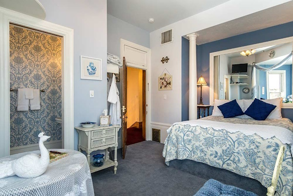
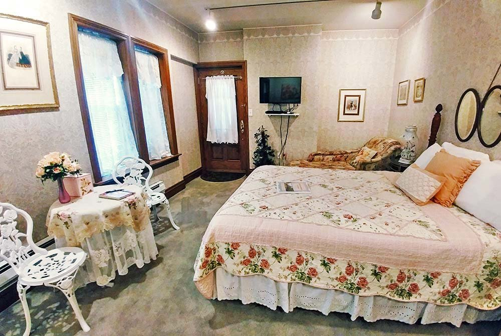
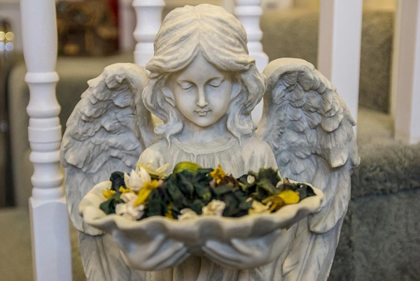
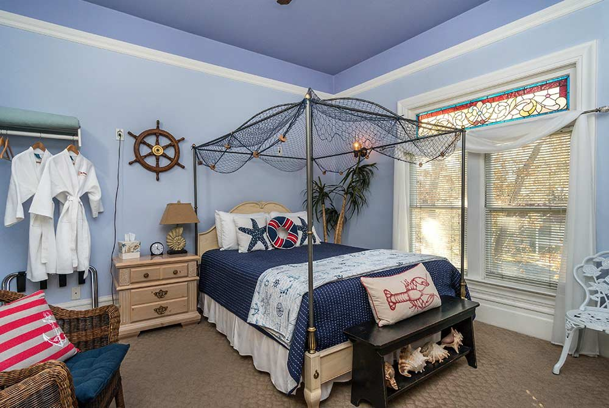
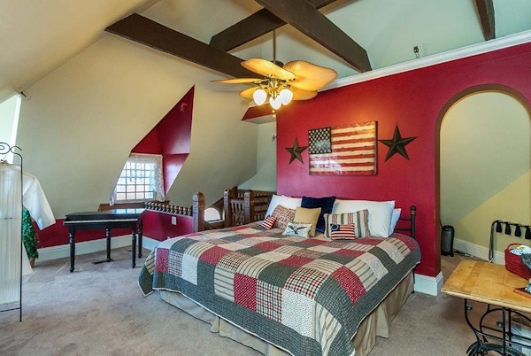
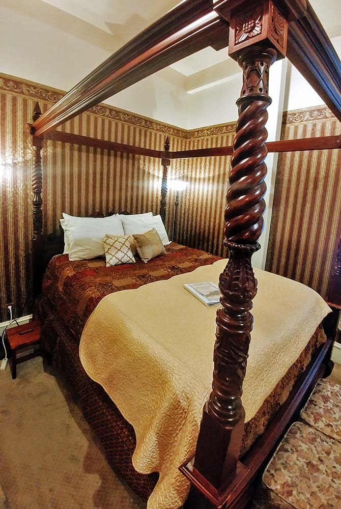
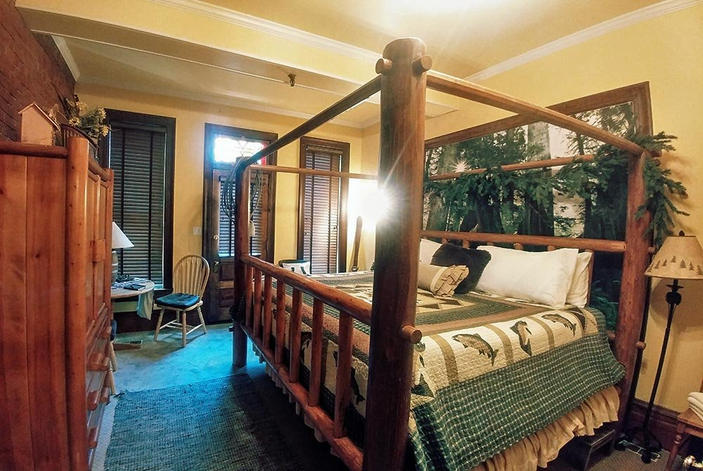
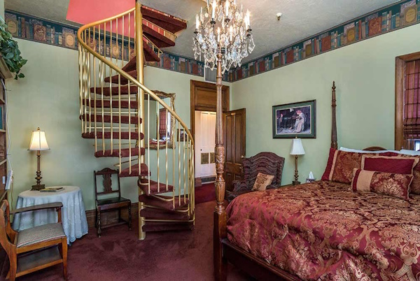

Step inside the enigmatic Hines Mansion, where the walls hold more than just the secrets of time. Each room whispers tales of its past—stories of love, betrayal, tragedy, and the restless spirits left behind. From the lingering scent of lavender in Kitty Hines’ sanctuary to the ghostly echoes of a sailor’s bell in the Seaside Retreat, the mansion is alive with mysteries waiting to be uncovered.
Once Kitty Hines’ private sanctuary, this room is said to be one of the most haunted spaces in the mansion. Guests have reported hearing faint whispers and the scent of lavender, Kitty’s favorite flower, lingering in the air. Late at night, the flicker of candlelight can be seen through the curtains, as if she’s still moving about her daily tasks. Legend has it that Kitty searches for a misplaced locket, a cherished keepsake she left behind when she moved to California.
This room once belonged to Kitty Hines’ business partner, a man with a dark past tied to secretive dealings. There have been stories of strange shadows cast upon the walls, and the air feels unnervingly cold, even in the summer months. Visitors have felt sudden cold spots, and faint whispers of a woman singing lullabies to a child have been heard.
The Secret Garden room has a tragic history, with whispers of a forbidden romance that ended in betrayal. Guests have claimed to see spectral figures tending to nonexistent flowers and catching glimpses of unfamiliar faces in the mirror, leaving visitors feeling unnerved.
This whimsical room is oddly out of place in the mountain town of Provo. It’s said that a sailor’s ghost roams here, and guests have heard the distant crash of waves and the mournful sound of a ship’s bell. Sometimes, guests have felt an unseen presence, as though being embraced by someone who has long since departed but is not at peace.
Perched on the top floor, the Eagle’s Nest Room is known for its unsettling atmosphere. Guests have reported hearing whispers in the middle of the night and encountering mysterious figures appearing in the window, even though no one lives there.
This cozy, wintry-themed room is anything but comforting when the ghostly chill sets in. Guests who have stayed here have reported the eerie sensation of cold hands brushing against their skin in the dead of night.
Rustic and welcoming by day, The Lodge takes a darker turn at night. Guests have reported hearing the sound of typewriters clicking away by themselves and encountering shadowy figures believed to be the restless spirits of miners who once frequented R. Spencer Hines’ saloon.
The Library is known for its eerie aura and the presence of a ghostly figure that roams the shelves. Some have claimed to see books rearrange themselves on their own and hearing whispers of forgotten secrets hidden within the pages of long-lost books.
